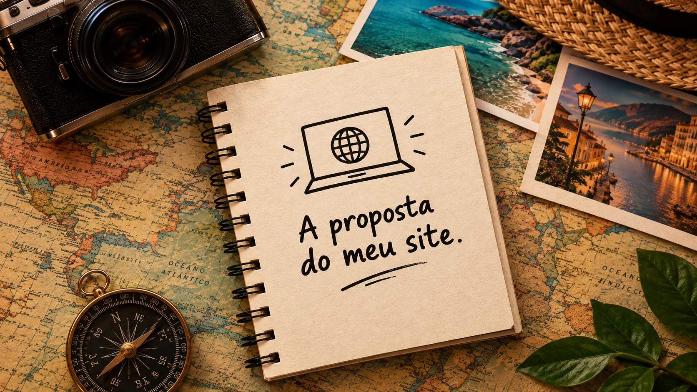

Sobre meu roteiro
Os 3 lugares escolhidos para este roteiro foram visitados por mim! A Lagoa azul foi a segunda cachoeira e primeira trilha que fiz, uma aventura única e que deve ser feita uma vez (ou mais). No final do dia você se sente cansado, mas realizado. Já o passeio de balão te proporciona uma das melhores sensações e paisagens incríveis, com bastante adrenalina. Após o passeio queremos relaxar para passar a tensão, a vinícola XV de Novembro é um ótimo roteiro para se fazer depois, Boituva e São Roque são próximas e além da quinze de Novembro a cidade possui várias vinícolas maravilhosas.
A proposta do site é que você conheça e pesquise sobre os lugares mencionados e crie interrese por um roteiro diferente do tradicional, com mais emoção, experiências individuais e relaxante.